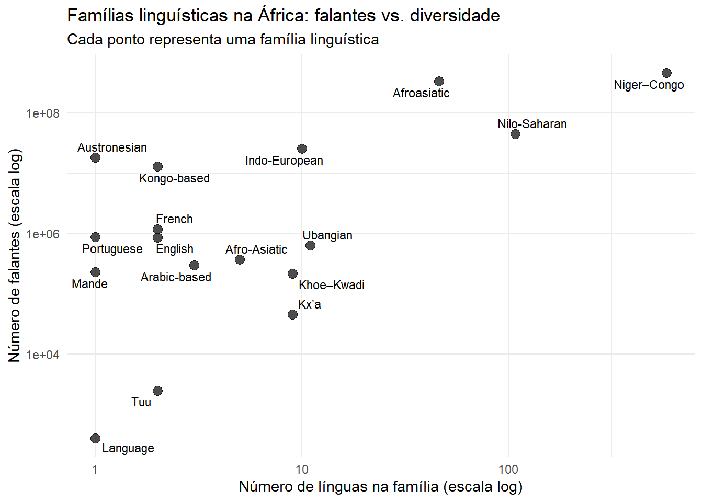

Linguística é um assunto que me interessa desde a escola. É fascinante saber que cada cultura se expressa em uma linguagem diferente, além do que uma pessoa que fala vários idiomas tem um charme encantador. Ao olhar para o continente africano, sua quantidade incrível de idiomas aumenta ainda mais esse interesse: a diversidade linguística é tão grande que é quase impossível de encontrar um consenso na sua classificação.
No Tidytuesday dessa semana, primeiro de 2026, analisei um scrapping da página Languages of Africa da Wikipedia, com o objetivo de analisar a distribuição das línguas africanas por famílias linguísticas e refletir sobre os limites desse tipo de base de dados.
africa
# A tibble: 796 × 4
language family native_speakers country
<chr> <chr> <dbl> <chr>
1 ǂKxʼaoǁʼae Kxʼa 5000 Namibia
2 ǂKxʼaoǁʼae Kxʼa 5000 Botswana
3 Abon Niger–Congo 800 Cameroon
4 Abron Niger–Congo 1393000 Ghana
5 Abron Niger–Congo 1393000 Ivory Coast
6 Acheron Niger–Congo 20000 Sudan
7 Adara Niger–Congo 300000 Nigeria
8 Afar Afroasiatic 2500000 Ethiopia
9 Afar Afroasiatic 2500000 Djibouti
10 Afar Afroasiatic 2500000 Eritrea
# ℹ 786 more rows
O desafio de classifcar línguas
Antes de entrar nos resultados, é importante destacar que classificar línguas está longe de ser uma tarefa trivial. A evolução linguística é um processo lento, contínuo e profundamente influenciado por fatores históricos, culturais e geográficos. Criadores de conteúdo como o Alomorfe mostram com frequência como diferentes correntes teóricas podem divergir sobre a origem e o parentesco entre línguas, tornando qualquer classificação, em certa medida, uma simplificação da realidade.
Esse ponto é especialmente relevante quando lidamos com dados obtidos via scraping. Na base utilizada, por exemplo, aparecem “famílias” chamadas “Portuguese” ou “English”, que na verdade se referem a línguas crioulas. Essas línguas não se encaixam diretamente nem na família indo-europeia tradicional, nem exclusivamente nas famílias linguísticas africanas originárias, evidenciando ambiguidades e limitações da fonte de dados.
africa |> dplyr::count(family, sort = T) |>print(n=17)
Respeitando o trabalho da limpeza original da base, vamos proceder com as análises iniciais: Camarões aparece como o país com o maior número de idiomas, enquanto Soninke aparece como a língua falada em mais países simultâneamente, colada ao Árabe.
africa |> dplyr::count(country, sort = T)
# A tibble: 51 × 2
country n
<chr> <int>
1 Cameroon 96
2 Congo 85
3 Nigeria 73
4 Sudan 40
5 Burkina Faso 37
6 Ghana 34
7 South Africa 25
8 Chad 24
9 Namibia 24
10 Mali 23
# ℹ 41 more rows
africa |> dplyr::count(language, sort = T)
# A tibble: 502 × 2
language n
<chr> <int>
1 Soninke 13
2 Arabic 12
3 Fulani 11
4 Mooré 9
5 Fang 7
6 Tsonga or Xitsonga 7
7 Afar 6
8 Bariba 6
9 Gourmanché 6
10 Lozi 6
# ℹ 492 more rows
Densidade linguística
Uma análise muito interessante que podemos fazer é o quanto algumas famílias podem ser “densas”, ou seja, comparar o número de falantes e o número de idiomas dentro de cada família linguística.
ggplot2::ggplot(africa_families, ggplot2::aes(x = languages, y = speakers)) + ggplot2::geom_point(size =3, alpha =0.7) + ggrepel::geom_text_repel( ggplot2::aes(label = family),size =3,max.overlaps =Inf ) + ggplot2::scale_x_log10() + ggplot2::scale_y_log10() + ggplot2::labs(x ="Número de línguas na família (escala log)",y ="Número de falantes (escala log)",title ="Famílias linguísticas na África: falantes vs. diversidade",subtitle ="Cada ponto representa uma família linguística" ) + ggplot2::theme_minimal()

Três coisas me chamam a atenção nessa análise de densidade: Primeiramente, a família Austronésia é a mais densa possível porque possui apenas um idioma (Malgaxe, da ilha de Madagascar), mas uma quantidade muito grande de falantes. Em seguida, a grande variedade da família Niger-Congo, com uma quantidade imensa de falantes de idiomas. Por fim, no canto inferior esquerdo vemos famílias como Tuu, Kx’a e Khoe-Kwadi, com poucos falantes e poucos idiomas, indicando perigo de extinção.
Essa análise possui limitações importantes de serem notadas:
“Número de falantes” é um dado muito complicado de obter por várias razões. Especialmente para línguas minoritárias, é necessário cautela com esse número.
O colonialismo na África é causa de características estruturais na situação linguística atual do continente, não somente através da comunicação em línguas Indo-Europeias ou crioulos, mas também através da ameaça de extinção de idiomas originários.
De toda forma, esse exercício não pretende ser metodologicamente rigoroso do ponto de vista linguístico, mas procura contribuir através da análise de dados e da cultura da colaboração na web na disseminação da informação.
Citation
BibTeX citation:
@online{batista2027,
author = {Batista, Victor},
title = {Diversidade Linguística Na {África}},
date = {2027-01-01},
url = {https://jvbatista1.github.io/posts/20261301_africanlanguages/},
langid = {en}
}